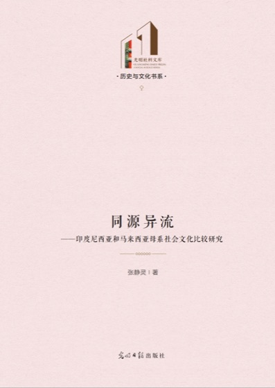
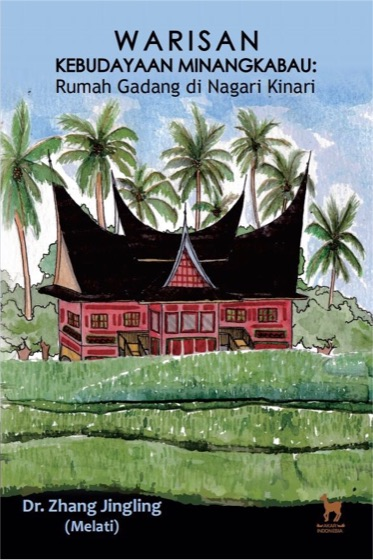
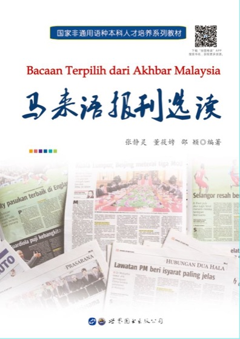
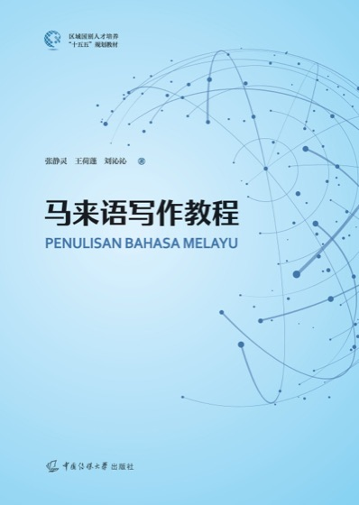

JomBelajar（马来语「一起学吧」）面向想学马来语的中国学生和马来西亚华人。第一版先做最常用的功能：按生活场景背单词。每个词有中文释义、例句和马来语发音，系统按记忆规律安排复习。
第一版按生活场景组织，每个场景 12 个词，配例句和马来语发音。以后会再加「按教材背」等模式。
selamat pagi 早上好
terima kasih 谢谢
berapa 多少
murah 便宜
teh tarik 拉茶
kurang manis 少甜
di mana 在哪里
kiri 左
ayah 爸爸
ibu 妈妈
cikgu 老师
belajar 学习
hari ini 今天
esok 明天
sakit 疼；生病
doktor 医生
第一版词库为草稿，会由张静灵老师逐条审核词义和例句。审核通过的词才会正式上架。审核前，学生看到的场景会提示「还在老师审核中」。
大号马来语单词，自动播放发音。先在心里想意思，再看答案。
认识、模糊、不认识三档。太简单的词可以直接「设为已掌握」。不认识的词，本组内还会再出现一次。
每背 5 个词，穿插一轮选择题：看词选义、看义选词轮流出。
| 打分 | 下次复习 |
|---|---|
| 认识 | 间隔逐步拉长：1 → 2 → 4 → 7 → 15 → 30 天 |
| 模糊 | 保持当前间隔，过几天再看 |
| 不认识 | 当天重新复习，间隔从头开始 |
| 设为已掌握 | 不再出现在复习里 |
首页显示今天到期要复习的词数，点一下就开始复习。
后台在电脑浏览器里打开（admin.bahasa.cn，正在搭建），老师和管理员在这里维护内容、查看学生情况。改动保存后，小程序里马上生效。
学习记录和学生资料存在微信云开发里，学生用微信登录，不需要另设密码。每个学生只能读写自己的学习记录。
注册时需要学生勾选同意隐私说明。资料只用于安排学习、方便老师了解学习情况，不用于广告。隐私说明见 www.bahasa.cn/privacy。
长期从事马来语教学与马来世界文化研究。出版专著《同源异流：印度尼西亚和马来西亚母系社会文化比较研究》、马来文专著 Warisan Kebudayaan Minangkabau，译著《马来西亚诗选》；参与编撰《马来语报刊选读》《新经典马来文学史教程》《马来语写作教程》。




曾赴马来西亚理科大学交流学习，受邀参加马来西亚国家广播电视台《早安马来西亚》直播访谈。
负责网站、小程序和后台的架构与部署。
| 阶段 | 内容 |
|---|---|
| 第一版（当前） | 按生活场景背单词、学生注册、网页后台 |
| 上线前 | 老师审核 96 个词；开通云开发并导入词库；小程序提交审核 |
| 之后 | 按教材背单词；课文朗读；在线测试和错题本；老师按班级查看进度 |